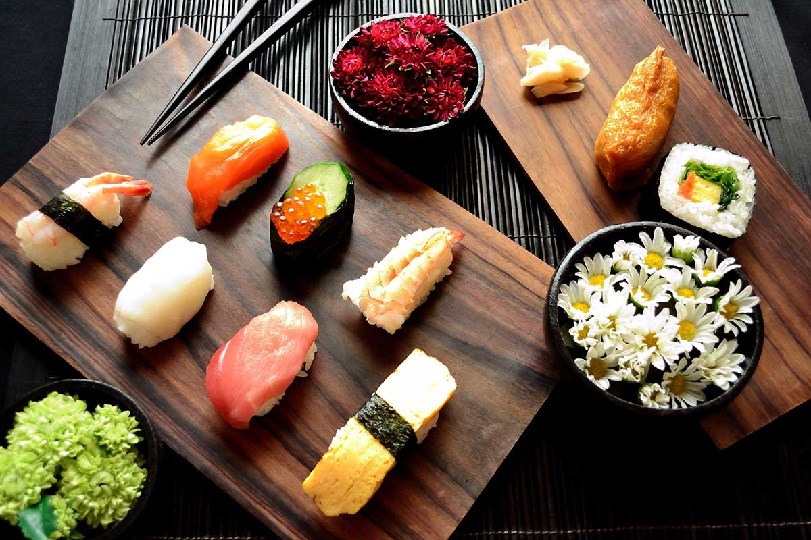

Creamy Miso Carbonara – A Japanese-Italian Twist

Carbonara is known for its silky texture and rich, comforting flavor. By adding a spoonful of white miso paste, this classic Italian dish transforms into something deeper and more complex.
The miso blends seamlessly with eggs, cheese, and pasta water, creating an ultra-creamy sauce packed with umami. It’s a beautiful harmony of Japanese and Italian culinary traditions in one bowl.
Why Miso Elevates Carbonara
Traditional carbonara relies on eggs, cheese, and cured meat for its richness. Miso enhances these flavors with fermented depth and subtle sweetness.
Instead of overpowering the dish, miso quietly amplifies the savory notes, making each bite more layered and satisfying.
Key Ingredients
- Spaghetti or linguine
- White miso paste
- Egg yolks
- Grated Parmesan or Pecorino cheese
- Pancetta or bacon
- Freshly ground black pepper
- Garlic (optional)
How to Make It
Cook the pasta in salted water until al dente. Reserve some pasta water before draining. In a bowl, whisk egg yolks, grated cheese, and white miso until smooth and creamy.
Sauté pancetta until crisp, then remove from heat. Toss hot pasta with the pancetta and quickly stir in the miso-egg mixture, adding pasta water gradually to create a silky sauce that coats every strand.

Serving Suggestions
Serve immediately while creamy and warm, topped with extra grated cheese and a generous sprinkle of black pepper.
Pair with a light green salad or roasted vegetables for balance and freshness.
Flavor Experience
Expect a silky texture with a savory depth that lingers pleasantly on the palate.
The fusion of miso and cheese creates a rich, comforting bowl that feels both familiar and excitingly new.
Two Culinary Worlds, One Perfect Bowl
Creamy Miso Carbonara is proof that culinary traditions can blend beautifully without losing their identity.
Elegant, comforting, and full of umami richness — this fusion pasta brings together the best of Japan and Italy in every bite.